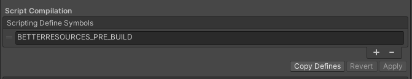

|
Better Resources
A better way to interact with Unity3D resources
|
|
Better Resources
A better way to interact with Unity3D resources
|
Better Resources is a library that offers a better API to interact with Unity3D resources. Most notably, it extends the existing Resources with the capability to query all resource paths in your project and imported packages, both at design-and-run-time!

Better Resources exposes the complete UnityEngine Resources API, which can be used straight out of the box. However, in order to query all resources in a project (including packages) a ResourcesCache is needed.
A ResourcesCache can be generated through the different overloads of BetterResourcesEditor. This file can be generated in the Unity3D editor from the Tools/HamerSoft/BetterResources/Generate Cache menu in the toolbar or through the available API. BetterResources also comes with a pre-made pre-build hook to generate a ResourcesCache before a build is compiled. See enabling the built-in pre-build hook for more information.
Once a cache is generated and saved in a Resources root folder like: <Project>/Assets/Resources/ResourcesCache it can be used in a build to initialize BetterResources to enable queries.
For more detailed docs please review the GH-Pages.
BetterResources requires an initialization step (on the main thread) in order to enable querying the available resources at run-time. This step is needed to load a ResourcesCache, which was made in the editor, into memory.
BetterResources exposes 3 flavors of initialization for a fitting coding style:
| Initialization | Description |
|---|---|
| BetterResources.Initialize | Blocking initialization on the main thread. |
| BetterResources.InitializeAsync | Non-blocking initialization using async/await. |
| BetterResources.InitializeRoutine | Non-blocking initialization using a Unity3D coroutine. |
Once the initialization process has finished the ResourcesCache is loaded into memory and queries are enabled. Note: BetterResources exposes a (static) Initialized event with a boolean flag to check if the initialization was successful.
The core piece of functionality BetterResources exposes over the default Resources API Unity3D provides is: Being able to query available resources at design-and-run-time. BetterResources exposes a nice QueryBuilder object to create fine-grained lookups for resources.
For example: Let's say we want to find all resources in your custom made package in some root Resources folder with a Camera component, but without an AudioListener component (because the rule of two doesn't work well here :D).
*The QueryBuilder supports a lot more filters so be sure to check them out, and if you have a suggestion for a useful filter that is missing please create a ticket, or better yet, create a pull-request.
The QueryBuilder implements an IDisposable interface so it's best to use it in a using statement for resource optimization.
In contrary to common believe, Unity3D does support nested resources folders. So, for example: A path like: <Project>/Assets/Resources/RandomFolder/Resources/MyAsset.asset is supported by Unity3D. Another fun fact is that MyAsset.asset can be loaded through the built-in Resources Api using these two paths:
This is because each occurence of a directory called Resources is treated as a root to load from.
The Resources folder also doesn't have to be in the root of the Unity3D project or package. It's perfectly viable to have a Resources folder located at <Project>/Assets/SomeFolder/AnotherFolder/Resources. This Resources folder, will be treated as a root folder like no other.
Better Resources has a built-in pre-build hook that can be enabled to generate a ResourceCache just before a build is made. The hook is executed when a build is triggered through the Unity3D BuildSettings The pre-build hook can be enabled in different ways:
Add the custom BETTERRESOURCES_PRE_BUILD define at the top of some file.
You could also wrap this define in line a UNITY_ANDROID define if you just want to use the hook before making an Android build for example.
Add the custom BETTERRESOURCES_PRE_BUILD define to the PlayerSettings in the other tab (per platform) like so:

A custom define can also be set through the Unity3D PlayerDefineSymbols API. Just remember to do it for all platforms needed, just like the other alternatives.
A totally custom implementation is always possible. Inspiration can be taken from PreBuildHook. The BetterResourcesEditor exposes a number of overloads to generate a cache. These could be called through a custom pre-build hook, CloudBuild Pre-Export method or a custom CI implementation like GitHub Actions. _Just remember that most, if not all, of the pre-and-post build handlers in Unity run synchronously!_
Better Resources also comes with a AssetPostProcessor. This PostProcessor will detect if there's any changes being made to files in Resources directories. Once a new asset is added, deleted or moved to the Resources folder(s) it will kick in and generate a new cache and initialize BetterResources for use. It's main use is for better integration with custom Editor plugins that might use BetterResources to find resources. By using the AssetPostProcessor a new cache is generated and initialization is done automatically.
The AssetPostProcessor can be enabled by adding the scripting define: BETTERRESOURCES_AUTO_GENERATE. *The process for adding this custom define is identical to adding it for the pre-build hook.
A summary of the custom defines for Better Resources is the following:
| Define | Description |
|---|---|
| BETTERRESOURCES_PRE_BUILD | Enables the pre-made pre-build hook to generate the cache once a build is made. |
| BETTERRESOURCES_AUTO_GENERATE | Enables Editor integration, this is useful for writing Editor Plugins that need access to BetterResources. |
| BETTERRESOURCES_LOG | Enables logging. (Logging is a bit incomplete) |
Better Resources is a tribute to another amazing library called BetterStreamingAssets, hence the name :)
"Better Streaming Assets is a plugin that lets you access Streaming Assets directly in an uniform and thread-safe way, with tiny overhead. Mostly beneficial for Android projects, where the alternatives are to use archaic and hugely inefficient WWW or embed data in Asset Bundles. API is based on Syste.IO.File and System.IO.Directory classes."